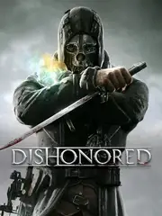

 |
|
| Tiempo de juego | 6h 18m 58s |
| Última actividad | 16/11/2025 13:23:57 |
| Añadido | 16/11/2025 13:23:49 |
| Modificado | 10/12/2025 11:26:11 |
| Estado de finalización | Jugado |
| Librería | Playnite |
| Fuente | |
| Plataforma | PC (Windows) |
| Fecha de lanzamiento | 9/10/2012 |
| Puntuación de la Comunidad | 85 |
| Puntuación de la Crítica | 90 |
| Puntuación de usuario | |
| Género | Adventure Puzzle Role-playing (RPG) |
| Desarrollador | Arkane Studios |
| Editor | Bethesda Softworks |
| Característica | Single Player |
| Enlaces | 🌟Definitive Edition Steam |
| Tag | |
Bienvenido a Dunwall. Una ciudad "whalepunk" (imaginate un steampunk oscuro, donde todo funciona con aceite de ballena) que se cae a pedazos por la peste y la corrupción.
Sos Corvo Attano. Eras el Lord Protector, el guardaespaldas de la Emperatriz. Ahora sos un asesino acusado injustamente, y lo único que querés es VENGANZA.
Pero no sos un asesino común. El Forastero te marcó y te dio poderes sobrenaturales.
Acá está la magia de Dishonored: el juego te da las herramientas y te dice: "Arreglate".
El juego te mira. Si te zarpás matando, la ciudad se va más al carajo. Más ratas, más guardias, más oscuridad. Es el sistema de "Alto Caos" y te lleva al final malo. Si jugás con sigilo (Bajo Caos), la ciudad empieza a sanar.
Dishonored es el hijo perfecto entre Thief, Deus Ex y BioShock. Una obra maestra del diseño de niveles y la libertad del jugador.